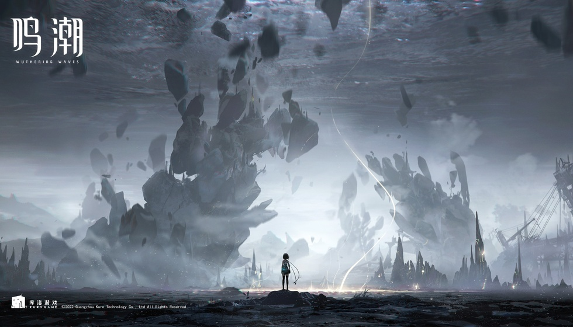

2026年BML现场直击：当中国玩家不再羡慕秋叶原
在台风预警和全球文化摩擦的双重夹击下，2026年的BML差点就成了史上最丧的一场二次元春晚。可谁都没想到，当暴雨预警拉满，场内却炸出了国产游戏史上最硬核的一次集体告白。
说真的，当BW现场那位韩国记者瞪着眼睛跟我说“这排面比秋叶原硬核多了”的时候，我突然意识到，咱们可能正站在一个历史拐点上。不仅是韩国记者，《棕色尘埃2》的负责人金在浩也透露，他们那旮沓的中国用户量已经干到全球前列了，甚至运营策略都开始反向跟着国内二游学。国际厂商现在看上海的眼神，跟咱们十年前看秋叶原是一模一样的。可就在一年前，这个舞台差点就空了。
别不信，这届BML开场前是真让大伙捏了一把汗。台风“巴威”挂着预警悬在头顶跟把刀似的，主办方急，玩家更急——抢张票不容易，万一给吹黄了找谁说理去？更要命的是大环境收紧，国际文化交流进入审慎阶段，歌单里海外内容的缺口怎么补？当时圈子里都在嘀咕：把那些日本IP和海外曲目抽走，光靠咱们自家的二游，这桌席还能不能开起来？结果大家也看到了，不仅撑起来了，还直接把房顶掀了。
当熟悉的唱段响起来的时候，我就知道事情没那么简单了。跟2022年那种第一次出海、第一次让老外对着中国游戏哭的兴奋劲儿完全不是一回事。这次全场扯着嗓子合唱《神女劈观》，纯粹是咱们自己唱给自己听的。这是一种微妙但巨爽的心态转变——从“卧槽老外终于懂了”变成了“没错这本来就是我们的”。国内玩家这三年被太多好作品喂饱了，早就脱敏了那种对外证明的焦虑，进化成了一种日常化的文化主权确认。以前是生怕别人不认，现在是爷自己唱着爽就完事了。这种内驱力的转变，才是国产二游能坐稳中心位的第一块压舱石。当绿色荧光棒亮起的那一刻，我脑子里就只剩下一个念头：这局稳了。

散场的时候我一直在观察，想象中那种“玩家互撕修罗场”压根没出现。《鸣潮》的哥们跟《方舟》的“利刃”坐在一块喝可乐，前面喊着“卡提西娅的狗”那位，转头《让风告诉你》的前奏一响，歌词比谁都熟。这放在五年前妥妥的贴吧屠版素材，如今却成了BML日常。咱们现在是被好游戏把嘴给喂叼了。国产二游供给充沛到这个份上，核心玩家早就进化出了“博爱党”属性，有的是好游戏玩，干嘛要吊死在一棵树上当精神股东？这种“全都要”的甲方心态，直接用硬实力把过去那种饭圈互撕的审美隔阂给抹平了。这种其乐融融的场景，五年前谁敢想？
玩家敢在场子里这么造，归根结底是厂商真能打。你就看上海这地界，、米哈游、鹰角、蛮啾、散爆、悠星……这一长串名字搁这杵着，简直就是二游界的硅谷。这回BW上，《异环》直接砸了一台保时捷918痛车当展品，那可不是模型，是真金白银千万级别的硬货；乐元素上海团队端出来的《白银之城》，试玩长队排得跟抢菜市场特价似的。更别提啊哈娱乐围绕《伍六七》搞的全媒体布局，动画、手游、外传电影、线下签售全给安排上了。老产品持续发力，新品排队火爆，IP多栖布局玩得飞起。玩家敢喊，就是因为厂商真的能打。
夸归夸，热乎劲儿上头了，咱也得坐下来聊聊还差点啥。BML场内是燃爆了，但国产二游真就无敌了？也没那么玄乎。现在咱们的工业化流程确实不虚日本了，甚至某些肝度氪度设计上还反向输出了一波。可在角色塑造的“余味”和世界观铺陈的耐心上，该交的学费一分不会少。真正的中心地位不在于一次满座，而在于你能不能定义下一个五年的美学标准。咱们赢下了一场晚会，但不代表能赢下全世界。二游玩家最在意的“工业化”和“艺术性”怎么平衡，这道题谁先答出来，谁才是真话事人。夸完了，该聊的短板也得聊透。
散场的时候雨下得很大，但没人急着躲。我旁边俩老哥，一个冲着另一个喊“祝你的终末地NB”，车里那位摇下窗户吼回来“祝你的鸣潮也NB”。这场面比任何官方Slogan都带劲。这哪是互相祝福，分明是玩家在用最硬核的方式完成对国产游戏“主权”的确认——你的热爱我认，我的热爱你也别怂。咱们家底厚了，不怕比。雨浇在脸上，没人觉得扫兴。
散场那场雨，浇灭的是台风天的不确定性，浇不灭的是场外此起彼伏的“祝你的XX牛逼”。我一直在想，咱们二游玩家什么时候变得这么大方了？后来想通了，当家底厚了，看啥都是风景。国产二游这桌宴席才刚上热菜，别急着散场，好戏还在后头。对于今年BML的这股“国产旋风”，各位老哥在评论区敲下你最看好哪款产品的未来？咱们看看哪家的粉丝嗓门最大。
关于我们
📱 公众号名称：三天游戏
✍️ 作者：曾三天
扫码关注公众号，获取每日最新资讯

商务合作与版权
商务合作 / 内容投稿 / 品牌推广
请关注公众号「三天游戏」后台留言联系
版权声明：本文由作者整理，转载需注明出处。